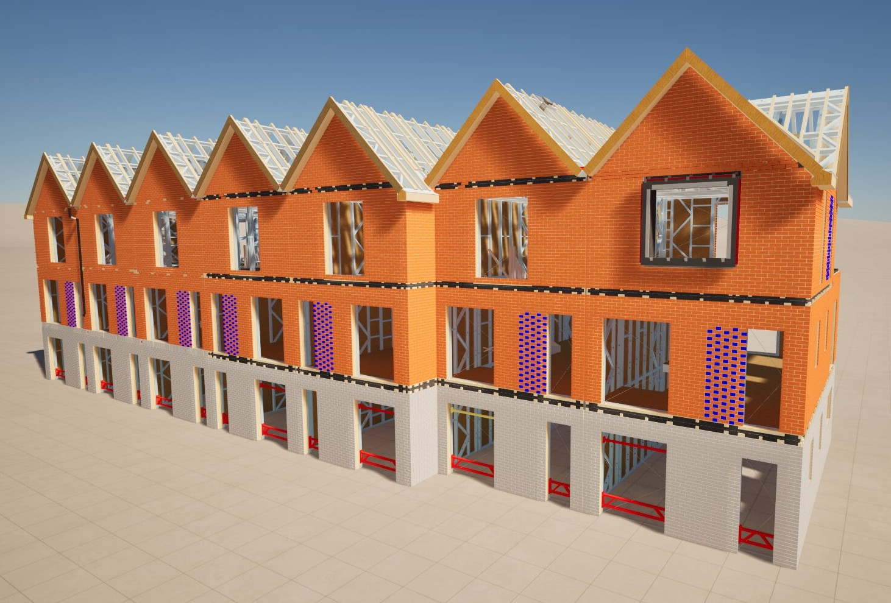
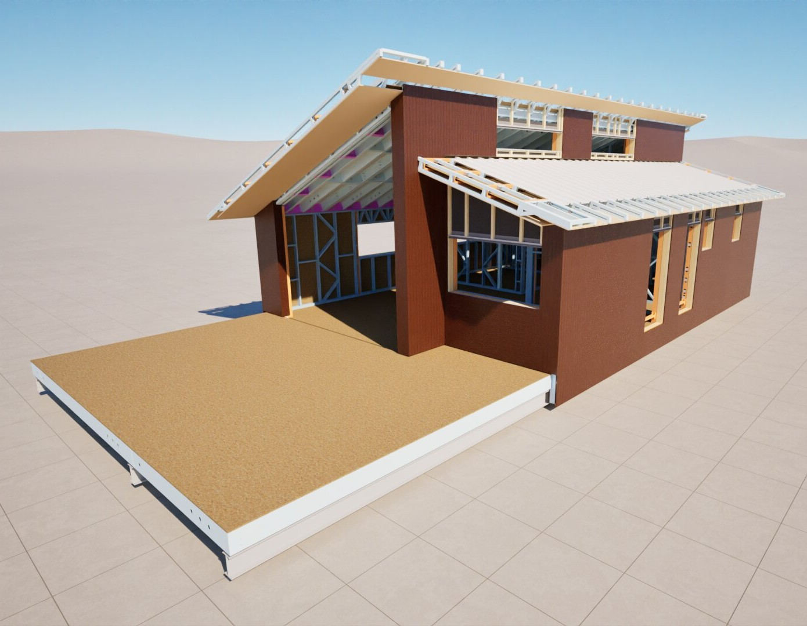

TECHNICAL · REVIT · BIM
Technical
Design Projects
Selected professional projects developed through technical design, Revit-based BIM workflows, design coordination and construction-focused information. Project information and imagery are presented selectively to respect confidentiality.

Professional work · Technical design · BIM
PROFESSIONAL WORK
Projects
Technical Design · Revit · BIM · Construction
Atherton Grove
Professional technical design and BIM work developed as part of my role at Starship, with selected project imagery presented to respect confidentiality.

Sandbank Point
Professional project experience involving Revit-based design development, technical coordination and construction-focused information.

Glentress Forest
Professional technical design and BIM experience, presented through selected project imagery and non-confidential design information.
PROFESSIONAL EXPERIENCE
Design information
developed for construction.
These projects form part of my professional experience at Starship. The portfolio presents selected renders, site photographs and Revit-based work while excluding confidential technical drawings, proprietary information and project-specific construction details.